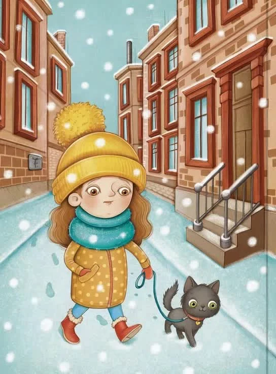
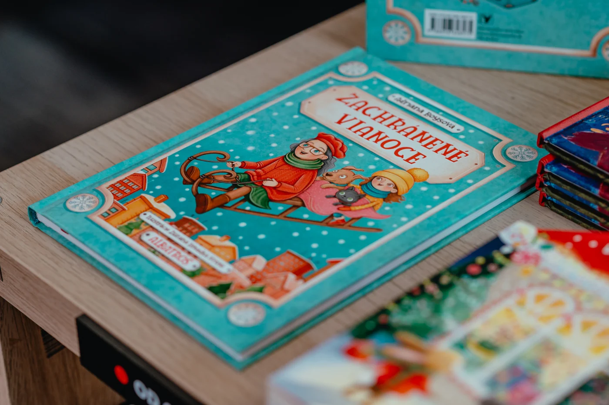
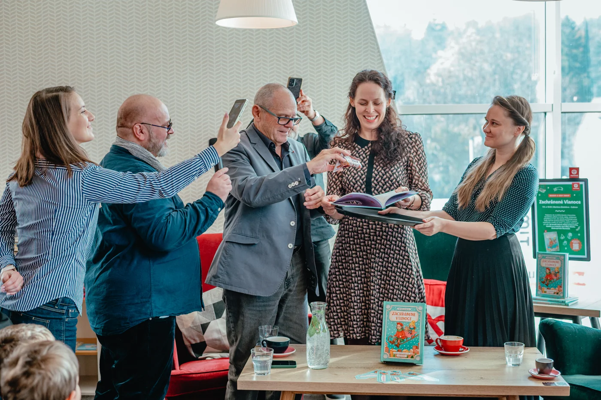

Zachránené
Vianoce
Aurélia prežíva prvé Vianoce bez milovanej starkej. Dievčatku veľmi chýba a na sviatky bez nej a jej skvelých medovníkov sa vôbec neteší. V tomto predvianočnom čase, ktorý je pre ňu plný spomienok a smútku, jej zasnežené chodníky privedú do života milú, osamelú ženu. Vďaka ich domácim miláčikom – nezbednej mačke Plačke a starostlivej fenke Gučke – sa tie dve rýchlo skamarátia. Netrvá dlho a obe zistia, že ich spája viac, než len obava z blížiacich sa sviatkov…
„Kde bolo, tam bolo, bolo jedno mesto. Celkom obyčajné, skryté medzi kopcami, s domami malými i veľkými, s červenými strechami, šikmými aj rovnými, ako vravím, úplne obyčajné mesto. No jedného dňa sa v ňom stalo niečo nezvyčajné. Do mesta vtrhla snehová búrka…“



Čarovný a láskavý príbeh o nádeji a zázraku, ktoré prídu vtedy, keď ich najmenej čakáme.
Táto knižka je o nečakanom priateľstve, nádeji a zázraku na poslednú chvíľu. Nechýba v nej dobrodružstvo, vôňa škorice, rozprávková sánkovačka aj hrejivý pocit blízkosti, čo roztápa cencúle, otvára srdcia a prináša radosť.
Povedali o knihe:
„Adriana Boysová vytvorila svet, v ktorom sú emócie pravdivé a vzťahy skutočné. V príbehu nám odhaľuje, že zázraky sa rodia nielen počas veľkých udalostí, ale aj v tichu medzi snehovými vločkami. V nečakanom stretnutí a v jednoduchosti každodenných činov.
Zachránené Vianoce vám pripomenú, že v každom smútku je semienko nádeje, v každej zime iskrička svetla. Nech vás sprevádza vôňa škorice, chladiaci sneh a teplo, ktoré sa rodí v priateľskej náručí."
Prečo si túto knihu prečítať
- Slovenský originál: Na trhu je mnoho vianočných titulov, no veľká časť z nich je prekladová - Zachránené Vianoce prinášajú slovenský pohľad na vianočné sviatky.
- Tri generácie v jednom príbehu: Príbeh spája tri generácie a nevyhýba sa ani smútku či osamelosti, no vždy ponúkne nádej.
- Naše tradície: Kniha je jedinečná aj tým, že v nej ožívajú slovenské zvyky a tradície, ktorým je autorka verná aj napriek tomu, že už roky žije v Luxembursku.
- Krásne ilustrácie: Príbeh plný nádeje a oddanosti ilustrovala Zuzana Dreadka Krutá.
- Mediálna odozva: Recenzenti knihu opisujú ako hrejivé čítanie, ktoré dokáže osloviť nielen detské publikum, ale vďaka hlbšiemu posolstvu o vyrovnaní sa so smutnými chvíľami zaujme aj dospelých.
- Knižka je oficiálne odporúčaná pre čitateľov od 8 rokov, ale je vhodná aj pre menšie deti pri spoločnom čítaní s dospelými.